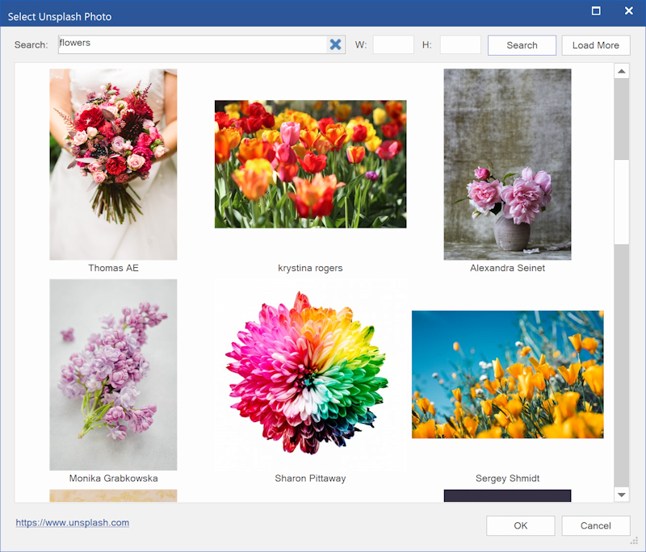
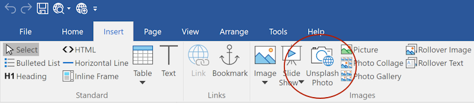
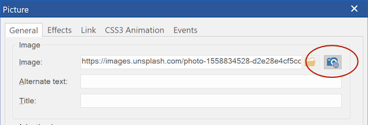

Insert Unsplash Photos
Browse thousands of free-to-use (see license), high quality images from Unsplash directly within WYSIWYG Web Builder.
Unsplash images can be inserted via the Insert Menu.
Browse thousands of free-to-use (see license), high quality images from Unsplash directly within WYSIWYG Web Builder.
Unsplash images can be inserted via the Insert Menu.

When you open the Unsplash insert dialog, it will display a random selection of images. Enter a one or more keywords in the 'Search field to display a custom selection. Each requests will display 40 images, click the 'More' button to show the next page.
You can also limit the size of the image by specifying the width and height (W and H properties). When the specified size is different than the original aspect ratio then the image will be clipped. This makes it possible to create a square version of the image (eg 250x250).
You can also limit the size of the image by specifying the width and height (W and H properties). When the specified size is different than the original aspect ratio then the image will be clipped. This makes it possible to create a square version of the image (eg 250x250).

There is also a dedicated Unsplash browse button next to the standard image browse button.

Notes:
As specified in the Unplash guidelines (https://help.unsplash.com/api-guidelines/unsplash-api-guidelines), images will be inserted as 'hot links'.
So, the images are loaded from the Unsplash website, they are not uploaded to your website.
By default, Unsplash requests will be made via WYSIWYG Web Builder's Unsplash account. The number of requests per hour is limited to 250 for each user. If need more than 250 requests then you can specify a (private) Access Key (in Tools -> Options), so the application will use your own Unsplash account instead. In that case, all requests will go directly to the Unsplash website instead of via WYSIWYG Web Builder's proxy.
To get an Access Key, you will need to create a developer account on the Unsplash website: https://unsplash.com/oauth/applications
Although the images are free-to-use, it's still your responsibility to make sure you are not infringing copyrights when using images on your website.
As specified in the Unplash guidelines (https://help.unsplash.com/api-guidelines/unsplash-api-guidelines), images will be inserted as 'hot links'.
So, the images are loaded from the Unsplash website, they are not uploaded to your website.
By default, Unsplash requests will be made via WYSIWYG Web Builder's Unsplash account. The number of requests per hour is limited to 250 for each user. If need more than 250 requests then you can specify a (private) Access Key (in Tools -> Options), so the application will use your own Unsplash account instead. In that case, all requests will go directly to the Unsplash website instead of via WYSIWYG Web Builder's proxy.
To get an Access Key, you will need to create a developer account on the Unsplash website: https://unsplash.com/oauth/applications
Although the images are free-to-use, it's still your responsibility to make sure you are not infringing copyrights when using images on your website.